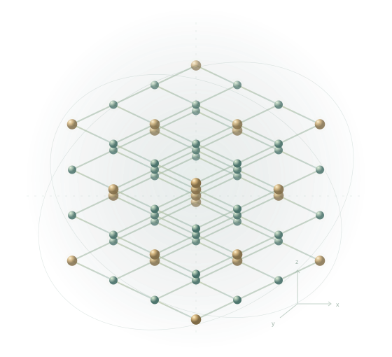

PHYSICS · COMPUTATION · MATERIALS
Understanding matter.
From first principles.
Exploring how structure, pressure, and dimensionality shape the properties of materials.
Paras R. PatelPh.D. Candidate & Senior Research Fellow (SRF)
The Maharaja Sayajirao University of Baroda, India
The Maharaja Sayajirao University of Baroda, India

RESEARCH PROFILE
Exploring materials,
one atom at a time.
Computational materials science at The Maharaja Sayajirao University of Baroda.
I use first-principles calculations, crystal structure prediction, and machine-learning interatomic potentials to explore materials under pressure, low-dimensional systems, and energy materials.